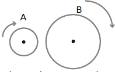

|
NO ME SALEN
EJERCICIOS RESUELTOS DE FÍSICA
(Movimiento circular uniforme)
|
|

|
| |
21 - Dos ruedas A y B, de radios RA= 20 cm y
RB= 40 cm giran en sentido horario. La frecuencia
de rotación de la rueda A es de 120 r.p.m. y la
de la rueda B es de 240 r.p.m. En cierto instante
se le aplica un freno a cada rueda de forma tal
que A se detiene en 16 s y B en 8 s, ambas con
aceleración angular constante. |
a) Para cada rueda expresar la aceleración
angular, la velocidad angular y el ángulo en función
del tiempo.
b) ¿En qué instante tienen ambas ruedas la
misma velocidad angular? ¿En qué instante los
puntos de la periferia tienen velocidades de igual
módulo?
c) Calcular el ángulo barrido por cada rueda
entre el instante en el cual se aplican los frenos y
cada uno de los instantes del item b).
|
 |
|
| Uh... es larguísimo... Te propongo que nos dediquemos exclusivamente a la rueda A, y seguramente todo lo que hagamos con ella podremos hacerlo rodar con la otra. A ver qué tenemos: nos dan la velocidad angular en revoluciones por minuto, pasémosla a radianes por segundo:
ωA = 120 2π / 60 s = 4π s-1
Esta es las velocidad angular también cuando comienza a frenar. Ahora pasemos al frenado. Tomemos el instante en que comienza el frenado como t = 0 (nada lo impide). Recordando que la aceleración es el cambio de velocidad dividido el intervalo de tiempo en que la velocidad cambia, tenemos:
γA = ΔωA / ΔtA
Y se frena totalmente en 16 segundos:
γA = − 4π s-1/16 s = − 0,25 π s-2
Ahora podemos integrar esa función para obtener la función velocidad:
ωA(t) =∫(− 0,25 π s-2) dt = − 0,25 π s-2 t + CωA
Y como en nuestro instante cero la velocidad era la que calculamos primero:
ωA(0s) = − 0,25 π s-2 0 s + CωA = 4π s-1
CωA = 4π s-1
Y con eso ya podemos armar la ecuación de velocidad angular de A en función del tiempo:
ωA(t) = − 0,25 π s-2 t + 4π s-1
Si volvemos a integrar ésta, hallaremos la función posición:
θA(t) =∫(− 0,25 π s-2 t + 4π s-1) dt = − 0,125 π s-2 t2 + 4π s-1 t + CθA
Y como en nuestro instante cero también podemos elegir la posición angular, elegimos arbitrariamente θA = 0, podemos calcular la constante de integración CθA:
θA(0s) = − 0,125 π s-2 (0 s)2 + 4π s-10 s + CθA = 0
CθA = 0
Con esto ya podemos escribir la función posición angular para todo t (durante el frenado):
θA(t) = − 0,125 π s-2 t2 + 4π s-1 t
Operando de la misma manera con la rueda B encontraremos las 3 funciones también para ella. Resumamos: |
|
|
| |
θA(t) = 4π s-1 t − 0,125 π s-2 t2
ωA(t) = 4π s-1 − 0,25 π s-2 t
γA = − 0,25π s-2'
θB(t) = 8π s-1 t − 0,5 π s-2 t2
ωB(t) = 8π s-1 − π s-2 t
γB = − π s-2' |
a) |
|
|
|
Para conocer el instante, tw, en que las dos ruedas tienen la misma velocidad angular basta con que igualemos su ecuaciones de velocidad:
4π s-1 − 0,25 π s-2 tw = 8π s-1 − π s-2 tw
4 s-1 − 0,25 s-2 tw = 8 s-1 − s-2 tw
s-2 tw − 0,25 s-2 tw = 8 s-1 − 4 s-1
0,75 s-2 tw = 4 s-1
|
|
|
|
|
|
Para saber en qué instante, tv, los puntos de la periferia tienen igual velocidad, basta con que igualemos las velocidades tangenciales en el borde. Acordate que v = ω . R, de modo que:
ωA(tv) . RA = ωB(tv) . RB
(4π s-1 − 0,25 π s-2 tv) 20 cm = ( 8π s-1 − π s-2 tv) 40 cm
(4 s-1 − 0,25 s-2 tv) = ( 8 s-1 − s-2 tv) 2
4 s-1 − 0,25 s-2 tv = 16 s-1 − 2 s-2 tv
2 s-2 tv − 0,25 s-2 tv = 16 s-1 − 4 s-1
1,75 s-2 tv = 12 s-1
|
|
|
|
|
|
Pidámosle a la ecuación de posición angular de A que hable del instante tw = 5,33 s.
θA(tw) = 4π s-1 . 5,33 s − 0,125 π s-2 (5,33 s)2
θA(tw) = 17,8 π
Acordate que nuestro θA(0s) = 0, de modo que e anterior resultado es el que buscábamos. Hacemos lo mismo con B.
θB(tw) = 8π s-1 . 5,33 s − 0,5 π s-2 (5,33 s)2
θB(tw) = 28,5 π
|
|
|
| |
θA(tw) = 17,8 π ; θB(tw) = 28,5 π |
c) |
|
|
|
| |
|
|
| Repetimos lo mismo pero para el instante tv: |
|
|
| |
θA(tw) = 21,55 π ; θB(tw) = 31,35 π |
c) |
|
|
|
| Morí. |
|
|
DESAFIO: |
|
 |
| Algunos derechos reservados (en criollo: no podés publicarlo a tu nombre, ¿entendiste? Mirá que tengo un boga repesado, ¿eh?).
Eso sí, se permite su reproducción citando la fuente, o sea, papá. Última actualización mar-16. Buenos Aires, Argentina. |
|
|
| |
|